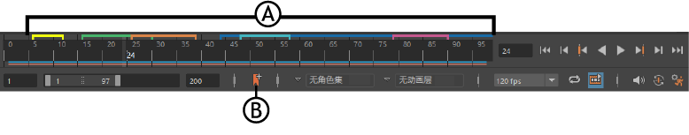
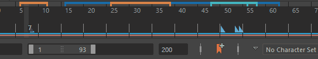
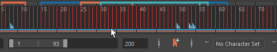
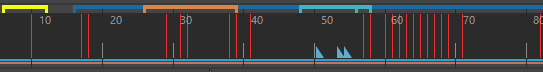

使用“时间滑块书签”(Time Slider Bookmarks)在时间滑块(Time Slider)上标记事件，以便您可以及时注意动画或布局的某些时刻，而非单个关键帧或动画。在许多不同的工作流中，书签都可帮助您及时处理事件。
“时间滑块书签”(Time Slider Bookmarks)由开始帧和结束帧（可以小至单帧）、名称和颜色组成。
注： 书签仅在“时间滑块”(Time Slider)上可见，且链接到时间和帧（而非关键帧）；如果移动关键帧，书签不会随之更新。
| 目标 | 操作 |
|---|---|
| 创建书签 | 按 Alt (Option) + T 或单击范围滑块上的“书签”(Bookmark)图标  ，以打开“创建书签”(Create Bookmarks)窗口。 ，以打开“创建书签”(Create Bookmarks)窗口。
|
| 快速创建书签 | 按 Alt (Option) + Shift + T 可将具有随机颜色的未命名书签添加到选定帧，而无需打开“创建书签”(Create Bookmarks)窗口。 |
| 编辑书签 | 在“时间滑块书签”(Time Slider Bookmark)图标 上单击鼠标右键，然后选择书签管理器(Bookmark Manager)以在其中查看场景中的所有书签。从列表中选择要更改的书签，然后
|
| 使用当前选择更新 |
使用新的时间滑块选择来更新选定的时间滑块书签
|
| 删除书签 |
删除时间滑块书签
从场景中移除所有时间滑块书签
|
| 框显书签 |
 在“时间滑块”(Time Slider)上框显书签
|
| 移动书签 |

按住 Ctrl 键并拖动书签，以在“时间滑块”(Time Slider)上重新定位该书签。
|
| 缩放书签 |
按住 Ctrl 键并拖动书签边缘以调整其大小。 |
| 逐一移动书签 |
 |
| 选择与书签关联的帧 |

按住 Ctrl 键并双击书签，以选择书签以及与其关联的任何帧。
按住 Ctrl 键时，可以移动或缩放书签和关联的帧。如果缩放帧，则书签会调整大小以包含它们。 |
| 显示/隐藏书签 |
显示/隐藏时间滑块书签
|
| 一次性编辑所有书签 | 在“时间滑块”(Time Slider)或“书签”(Bookmark)图标 上单击鼠标右键，以打开书签管理器(Bookmark Manager)。使用窗口顶部的“书签管理器”(Bookmark Manager)工具栏图标可同时编辑多个书签。
|
| 显示书签名称和时间范围 | 将光标悬停在时间滑块书签上可查看名称和范围。

注： 如果名称和范围未显示，请检查中的“显示工具动画演示”(Display Toolclips)是否已启用
|
 图标。
图标。
 图标。
图标。
 图标。
图标。
 图标。（热键：Shift + |（竖线））。
图标。（热键：Shift + |（竖线））。
 （热键：Shift + ;（分号））或
（热键：Shift + ;（分号））或 （热键：Shift + :（冒号））。
（热键：Shift + :（冒号））。